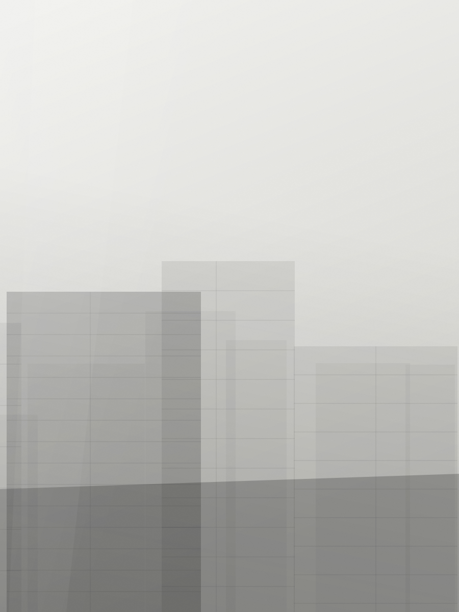
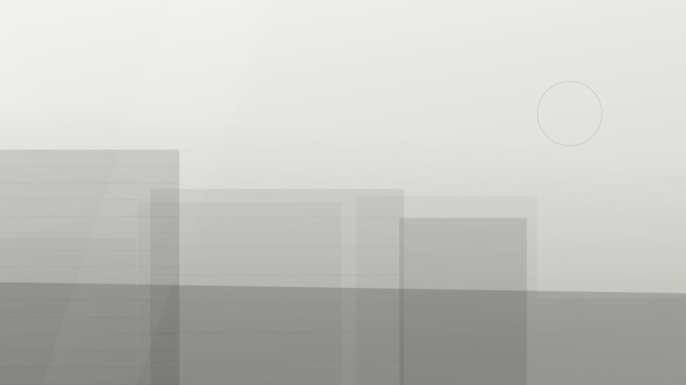
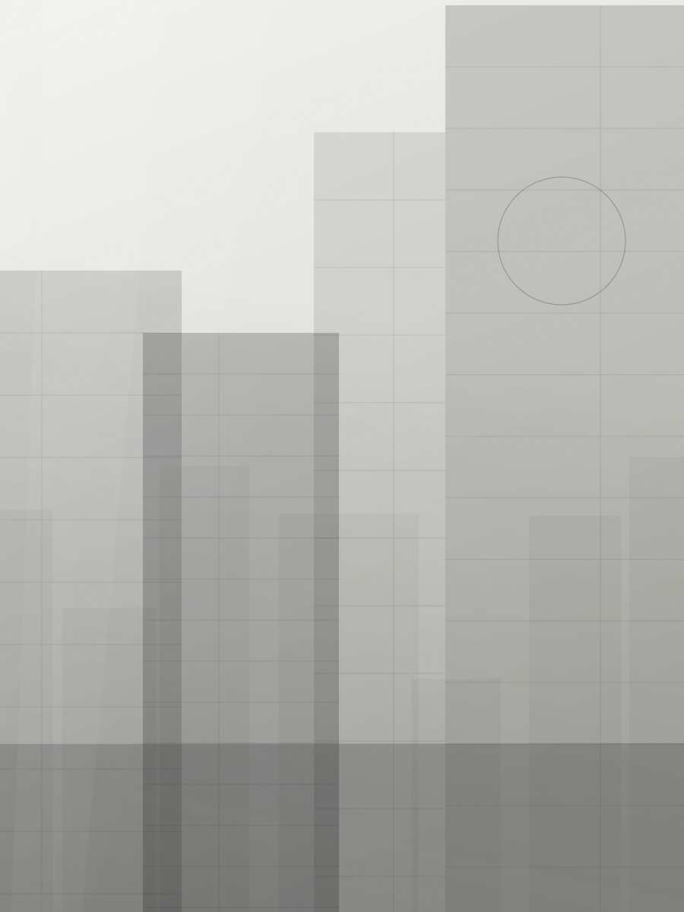

İrem Demiröz Koç
Kurucu Ortak, Mimar
Kısa biyografi — eğitim, önceki deneyim ve stüdyodaki sorumluluk alanı.
Stüdyo

Yaklaşım
İrem Demiröz Koç ve Burak Koç tarafından kurulan stüdyo; konut, ofis, kültür ve kamu yapılarında ölçekten bağımsız olarak çalışıyor.
Stüdyo ortak bir rahatsızlıktan doğdu: mimarlığa dair kararlar, çoğu zaman yer henüz anlaşılmadan alınıyor. Biz bunun yerine yavaş işle başlıyoruz — araziyi yürümek, ışığı yıl boyunca izlemek, işverenin gerçekte nasıl yaşadığını ya da çalıştığını dinlemek. Ardından gelen öneri, genellikle bizden istenenden daha yalındır.
Küçük kalmayı bilinçli olarak seçiyoruz. Her projede iki ortak da ilk eskizden son şantiye ziyaretine kadar bizzat yer alır; ekibi, tek bir konuşmanın herkese ulaşabildiği bir ölçekte tutuyoruz. Bu, daha az proje almak — ama onları daha iyi bitirmek anlamına geliyor.
İşlerimiz küçük ölçekli iç mekân müdahalelerinden karma kullanımlı kamusal yapılara kadar uzanıyor. Ölçek değişiyor; yöntem değişmiyor.
Yaklaşım
Yönlenme, hâkim rüzgâr, komşu duvarları, arsada hâlihazırda duran ağacın yüksekliği. Bunlar, henüz hiçbir çizgi çizilmeden projenin koşullarını belirler.
Gün ışığını en erken kütle etütlerinden itibaren modelliyor, boşlukları onun etrafında tasarlıyoruz. İyi ışık alan sade bir oda, kötü ışık alan gösterişli bir odadan iyidir.
Yapı başına üç ya da dört malzeme, kendisi olarak bırakılır — taşıyıcıymış gibi davranan bir kaplama yok, başka bir malzemeyi taklit eden bir yüzey yok.
En iyi detay, hiç fark etmediğiniz detaydır. Çizim zamanımızı birleşimleri süslemek yerine onları ortadan kaldırmak için harcıyoruz.
Ekip

Kurucu Ortak, Mimar
Kısa biyografi — eğitim, önceki deneyim ve stüdyodaki sorumluluk alanı.

Kurucu Ortak, Mimar
Kısa biyografi — eğitim, önceki deneyim ve stüdyodaki sorumluluk alanı.
Görünürlük
2018
Kuruluş
46+
Tamamlanan Proje
9
Şehir
4
Ödül & Seçki
Özel işverenler, geliştiriciler, belediyeler ve kültür kurumları. Tam referans listesi talep üzerine paylaşılır.
Yeni İşler